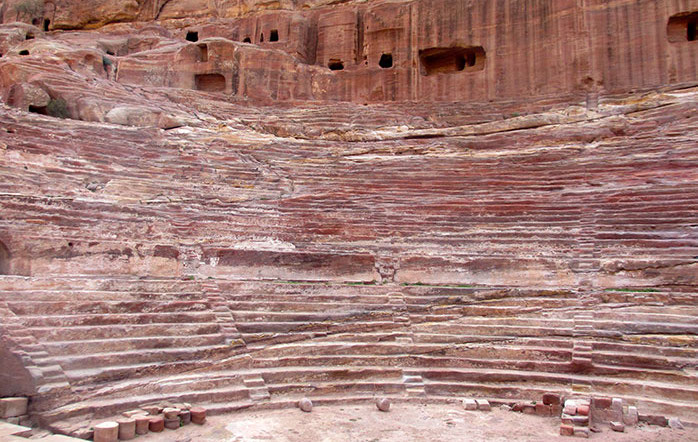

Petra is a famous archaeological site in Jordan's southwestern desert. Dating to around 300 B.C, it was the capital of the Nabatean Kingdom.
The “Rose City” is a honeycomb of hand-hewn caves, temples, and tombs carved from blushing pink sandstone in the high desert of Jordan some 2,000 years ago. Hidden by time and shifting sand, Petra tells of a lost civilization. Little is known about the Nabateans—a nomadic desert people whose kingdom rose up from these cliffs and peaks, and whose incredible wealth grew from the lucrative incense trade. Raqmu, or Petra (as the Greeks knew it), grew into the Nabateans’ most prominent city, linking camel caravans between the Mediterranean and Arabian Seas, from Egypt to Syria and beyond to Greece. Control of water sources and an almost magic ability to vanish into the cleft rocks ensured the Nabateans remained unconquered for centuries. Control of water sources and an almost magic ability to vanish into the cleft rocks ensured the Nabateans remained unconquered for centuries.Control of water sources and an almost magic ability to vanish into the cleft rocks
The Romans arrived in 63 B.C., signaling a new era of massive expansion and grandiose construction, like the theater that sat more than 6,000 spectators, as well as some of the city’s most impressive facades. Carved into the rock face, the Treasury and the Monastery both have unmistakable Hellenistic features, with ornate Corinthian columns, bas-relief Amazons, and fanciful acroteria. Knowing that such architectural feats were achieved by carving from the top down makes it even more impressive. Petra’s engineering phenomena are legion, including the sophisticated water system that supported some 30,000 inhabitants. Carved into the twisted passageway of the Siq, the irrigation channel drops only 12 feet over the course of a mile, while underground cisterns stored runoff to be used in drier times of the year.
The Treasury
Al-Khazneh (Arabic: الخزنة; "The Treasury") is one of the most elaborate temples in Petra, a city of the Nabatean Kingdom inhabited by the Arabs in ancient times. As with most of the other buildings in this ancient town, including the Monastery (Arabic: Ad Deir), this structure was carved out of a sandstone rock face.
The structure is believed to have been the mausoleum of the Nabatean King Aretas IV in the 1st century AD. It is one of the most popular tourist attractions in both Jordan and the region. It became to be known as "Al-Khazneh", or The Treasury, in the early 19th century by the area's Bedouins as they had believed it contained treasures.
The structure is believed to have been the mausoleum of the Nabatean King Aretas IV in the 1st century AD. It is one of the most popular tourist attractions in both Jordan and the region. It became to be known as "Al-Khazneh", or The Treasury, in the early 19th century by the area's Bedouins as they had believed it contained treasures.
The structure is believed to have been the mausoleum of the Nabatean King Aretas IV in the 1st century AD. It is one of the most popular tourist attractions in both Jordan and the region. It became to be known as "Al-Khazneh", or The Treasury, in the early 19th century by the area's Bedouins as they had believed it contained treasures.
The structure is believed to have been the mausoleum of The structure is believed to have been the mausoleum of the Nabatean K

The Monastry
The hike to the Monastery has visitors climbing over 800 steps for a solid 20 minutes or more of hiking. It is an almost entirely uphill journey. Along the way visitors pass numerous stalls, worked by women, selling scarves, souvenirs, and jewelry. Ad Deir ("The Monastery"; Arabic: الدير ), also spelled ad-Dayr and el-Deir, is a monumental building carved out of rock in the ancient Jordanian city of Petra. The Deir was probably carved out of the rock in the mid-first century CE. Arguably one of the most iconic monuments in the Petra Archaeological Park, the Monastery is located high in the hills northwest of the Petra city center. It is the second most commonly visited monument in Petra, after the Khazneh or "Treasury". The huge facade, the inner chamber and the other structures next to it or in the wider area around the Deir probably originally served a complex religious purpose, and was possibly repurposed as a church in the Byzantine period.
The Tombs
Here are tombs and houses built into the sandstone mountains by the Nabataeans 2000 years ago. Overlooking the center of Petra rise majestically the so-called "Royal Tombs," a series of large mausoleums with impressive facades hewn from the western slope of the Jabal al-Khubtha rock massif. It is not possible to associate them to particular Nabataean rulers, due to the lack archaeological evidence. But recent research seems to confirm their royal context. Surveys of the North-East Petra Project (NEPP) on a hill in front of al-Khubtha, postulate the area between the Wadi Musa and Wadi Mataha as the royal quarters of the Nabataean capital, where the monumental Palace Tomb could have served as "the tomb or heroon of the kings of Petra"
The Ampitheatre
Carved into the side of the mountain at the foot of the High Place of Sacrifice, the theatre consists of three rows of seats separated by passageways. Seven stairways ascend the auditorium and it can accommodate 4000 spectators. the monument was carved in the mountainside during the reign of King Aretas IV (4BC-AD27) the Romans rebuilt the stage back wall.